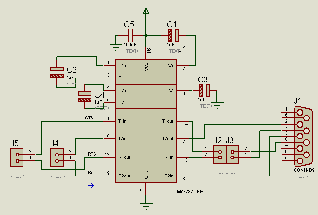
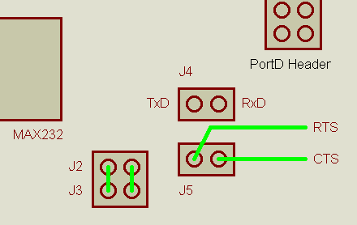

The RS 232 Circuit uses a standard MAX232 transceiver chip and the necessary external circuits.
It has 4 connectors: The female SubD 9-pin connector, jumpers to connect the spare pair of transceivers to RTS and CTS (for optional flow control), one Rx and Tx connector (like on the STK500) and one RTS/CTS connector (this may sound confusing, the schematic will make things clear).

J4 is the 2-pin connector we know from the STK500: It can be used to connect PortD.0 (Rxd) and PortD.1 (Txd) to the transceiver IC. On the board you can find it next to the PortD header.
The other pair of transceivers can be used in basically two ways. I have made simple drawings of how they can be used. They also show how the pins are located on the board:
Flow Control Signals (RTS/CTS): If the spare pair of transceivers should be used for the flow control signals RTS (from the PC) and CTS (to the PC), close J2/J3 as shown in the drawing and connect J5 to those pins you want to use for flow control.

If you want to use the transceivers for other purposes, for example a second UART (in software or ext. hardware), you can take the RS232 side of the data on J2. The J2 pin next to the MAX232 is for data FROM the PC and goes to the RTS pin on J5. The CTS pin can be used for data TO the PC, which will come out on the J2 pin next to J5.